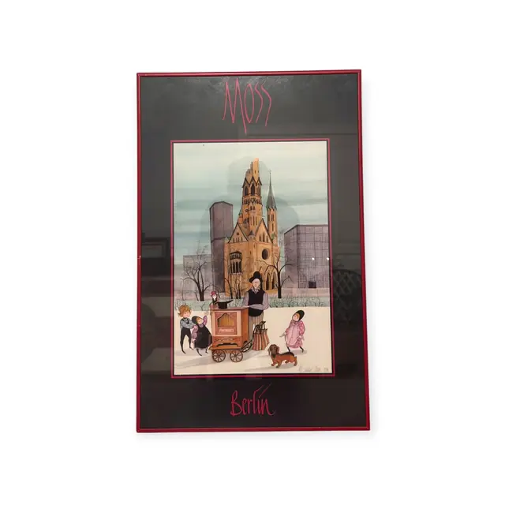
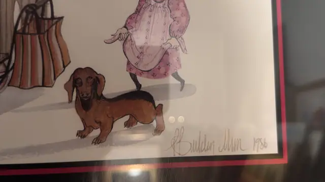

Paintings & Prints
P. Buckley Moss 'Berlin' Signed Print, Signed, Framed, 1986
Moss · 1986
Price Upon Request


About the Item
Moss. A stylised winter street scene: a tall dark-coated organ grinder stands behind a red-wheeled barrel organ while four elongated children in coats and hats gather around and a brown dachshund trots past on the snow. Behind them the broken spire and lower stump of the Kaiser Wilhelm Memorial Church rise in warm sandy brown against a pale blue-grey sky, flanked by bare trees and grey modern blocks. The figures are drawn with the artist's characteristic tall, narrow, almost faceless silhouettes, and the palette is restrained - dove blue, sand, black and one note of pink. Medium: offset lithograph / poster print on paper, pencil signed. Signed lower right of the image, in pencil, reading "P Buckley Moss 1986". Inscribed on the reverse or mount: Moss; Berlin; 1986. Condition: Sheet appears clean; glass carries strong reflections. The red frame shows minor edge scuffing.
Details
- Creator:
- Moss
- Creation Year:
- 1986
- Dimensions:
- Height: 25.5 in (64.77 cm)
Width: 16.5 in (41.91 cm)
outside of frame - Medium:
- offset lithograph / poster print on paper, pencil signed
- Period:
- 20Th
- Condition:
- Offered in the condition shown in the photographs.
- Reference Number:
- VO-92
- Documentation:
- no certificate photographed
- Gallery Location:
- Moss; Berlin; 1986